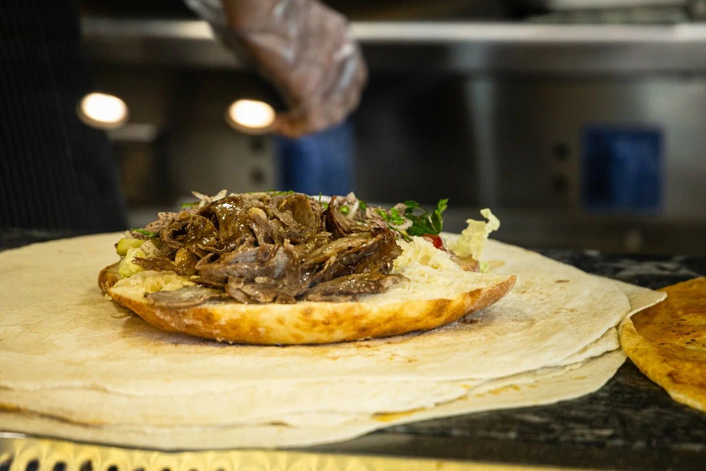

Как мы готовим
От углей до печи: коротко о том, что на нашей кухне и что к этому подают.
Шашлык на углях
Баранина, телятина, куриные бедрышки и крылышки поджариваются на углях и сохраняют сочность. К ним подают свежие овощи и лаваш, а к бараньей корейке ещё и рис.
Барбекю-бар
Лаваш и донер
Нежное мясо с сочными овощами заворачивают в тонкий лаваш или кладут в свежую булочку. Добавляют ароматный соус, а ещё можно выбрать спайси с халапеньо или сырный вариант.
Донер
Пиде и лахмаджун
Лахмаджун это тонкая хрустящая лепёшка с мясной начинкой, она выпекается в форме пиццы и делится на две половинки. Пиде выпекают в форме лодочки с телятиной, фаршем или сыром сулугуни.
Лахмаджун и пидеФалафель
Нежный нут и овощи со специями и лёгкой кислинкой соуса. Фалафель можно взять в лаваше, в сэндвиче, в салате или в сете с рисом и картофелем фри.
ФалафельПаста и сеты
Паста с курицей в соусах Альфредо, барбекю, карри или фахитос и паста с говяжьими котлетами на гриле. Сеты сытные: мясо или фалафель, рис, овощи и картофель фри.
СетыСоусы, десерты и лимонад
К блюдам есть фирменные соусы: йогуртно-чесночный и острый, а также барбекю и кетчуп. На десерт сутлач, запечённый в духовке, и шоколадный пудинг, а освежит фирменный лимонад.
Десерты и напиткиПроголодались?
Позвоните, закажите доставку или заходите к нам. Доставляет собственная курьерская служба.
Позвонить Смотреть меню